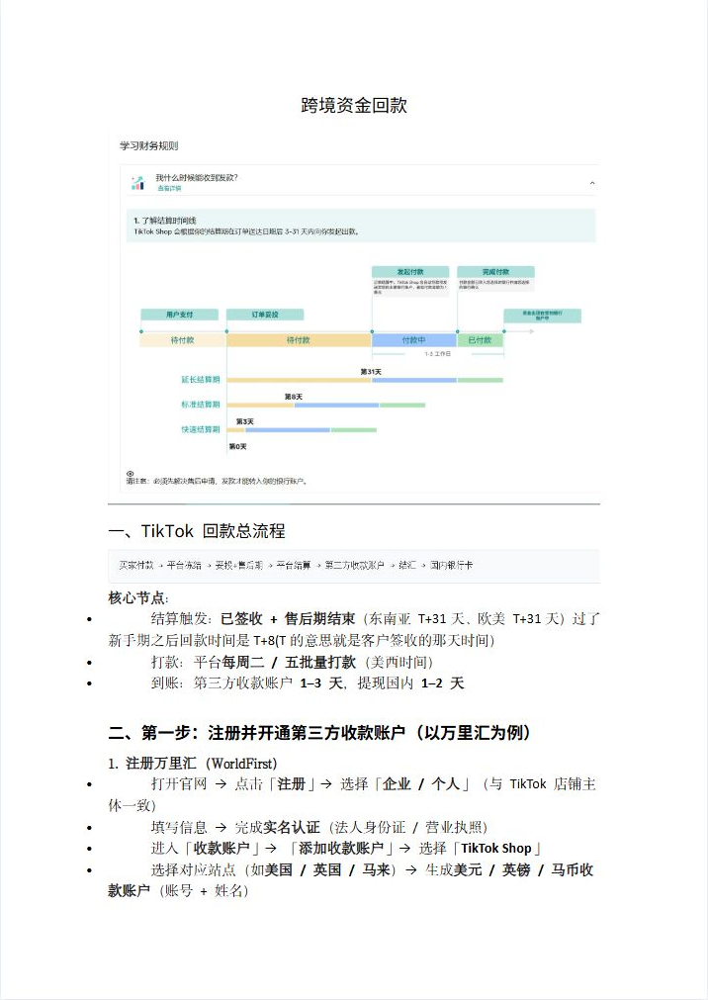
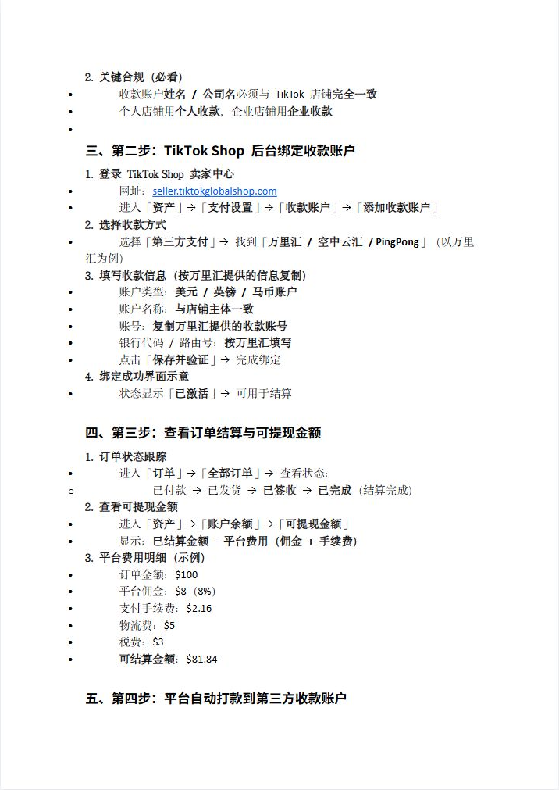
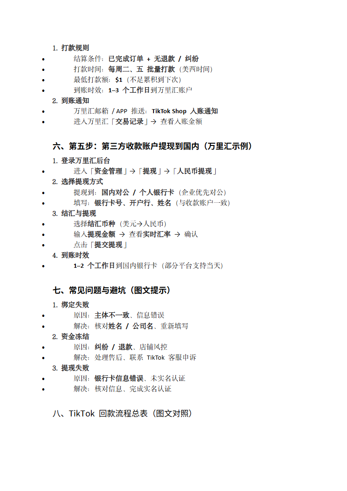

第 1 页

查看文字
跨境资金回款
一、TikTok回款总流程
核心节点：
结算触发：已签收+售后期结束（东南亚T+31天、欧美T+31天）过了
新手期之后回款时间是T+8(T的意思就是客户签收的那天时间）
打款：平台每周二/五批量打款（美西时间）
到账：第三方收款账户1–3天，提现国内1–2天
二、第一步：注册并开通第三方收款账户（以万里汇为例）
1.注册万里汇（WorldFirst）
打开官网→点击「注册」→选择「企业/个人」（与TikTok店铺主
体一致）
填写信息→完成实名认证（法人身份证/营业执照）
进入「收款账户」→「添加收款账户」→选择「TikTokShop」
选择对应站点（如美国/英国/马来）→生成美元/英镑/马币收
款账户（账号+姓名）
第 2 页

查看文字
2.关键合规（必看）
收款账户姓名/公司名必须与TikTok店铺完全一致
个人店铺用个人收款，企业店铺用企业收款
三、第二步：TikTokShop后台绑定收款账户
1.登录TikTokShop卖家中心
网址：seller.tiktokglobalshop.com
进入「资产」→「支付设置」→「收款账户」→「添加收款账户」
2.选择收款方式
选择「第三方支付」→找到「万里汇/空中云汇/PingPong」（以万里
汇为例）
3.填写收款信息（按万里汇提供的信息复制）
账户类型：美元/英镑/马币账户
账户名称：与店铺主体一致
账号：复制万里汇提供的收款账号
银行代码/路由号：按万里汇填写
点击「保存并验证」→完成绑定
4.绑定成功界面示意
状态显示「已激活」→可用于结算
四、第三步：查看订单结算与可提现金额
1.订单状态跟踪
进入「订单」→「全部订单」→查看状态：
o已付款→已发货→已签收→已完成（结算完成）
2.查看可提现金额
进入「资产」→「账户余额」→「可提现金额」
显示：已结算金额-平台费用（佣金+手续费）
3.平台费用明细（示例）
订单金额：$100
平台佣金：$8（8%）
支付手续费：$2.16
物流费：$5
税费：$3
可结算金额：$81.84
五、第四步：平台自动打款到第三方收款账户
第 3 页

查看文字
1.打款规则
结算条件：已完成订单+无退款/纠纷
打款时间：每周二、五批量打款（美西时间）
最低打款额：$1（不足累积到下次）
到账时效：1–3个工作日到万里汇账户
2.到账通知
万里汇邮箱/APP推送：TikTokShop入账通知
进入万里汇「交易记录」→查看入账金额
六、第五步：第三方收款账户提现到国内（万里汇示例）
1.登录万里汇后台
进入「资金管理」→「提现」→「人民币提现」
2.选择提现方式
提现到：国内对公/个人银行卡（企业优先对公）
填写：银行卡号、开户行、姓名（与收款账户一致）
3.结汇与提现
选择结汇币种（美元→人民币）
输入提现金额→查看实时汇率→确认
点击「提交提现」
4.到账时效
1–2个工作日到国内银行卡（部分平台支持当天）
七、常见问题与避坑（图文提示）
1.绑定失败
原因：主体不一致、信息错误
解决：核对姓名/公司名、重新填写
2.资金冻结
原因：纠纷/退款、店铺风控
解决：处理售后、联系TikTok客服申诉
3.提现失败
原因：银行卡信息错误、未实名认证
解决：核对信息、完成实名认证
八、TikTok回款流程总表（图文对照）